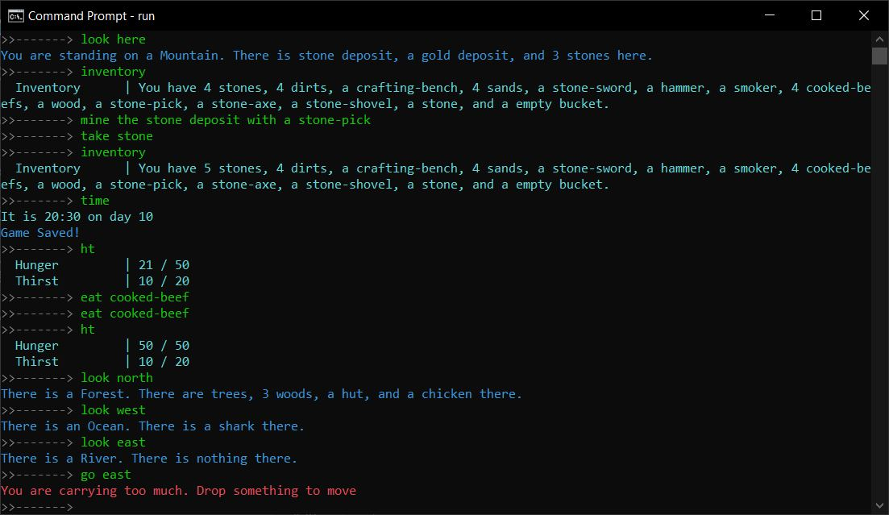

Hi.
 I'm Tim Twigg. I'm studying computer science at UCI, and expect to graduate in December 2023.
I'm Tim Twigg. I'm studying computer science at UCI, and expect to graduate in December 2023.
My Projects
I've worked on a number of projects both for course projects and personal challenges.
Adventure-2

I built my text-based command-line sandbox adventure game as an exercise in developing a more complex system than I was doing
in my course projects. The first iteration was mostly built in Python at the end of my freshman year, but the following year
I decided to rebuild it as a learning exercise in C++ programming paradigms. I decided against using an engine for this project
as I wanted my focus to be on designing and developing in C++, rather than on the game itself. Pictured is the game in play,
though only a few of the available commands are demonstrated here.
Although still in development, the game's basics are playable, and developed modularly to allow easy porting to different operating
systems or a web-based version.
Github Repo:
Mixed Ability Play Research
I am working with Professor Mark Baldwin on a Mixed Ability Play research project. The project exlores how we might bridge blind
and sighted communities through play. The game incorporates tactile interaction with Minecraft through computer vision and a 3D
printed physical game board. Custom games set within Minecraft support collaborative and competitive play designed to leverage
the abilities of each player. Pictured is the team developing our tactile interface which uses computer vision to link a simple
3D-printed grid with Minecraft.
My contribution to this project involved developing the core concepts, designing and building the minigames, and developing the app.
Github Repo: